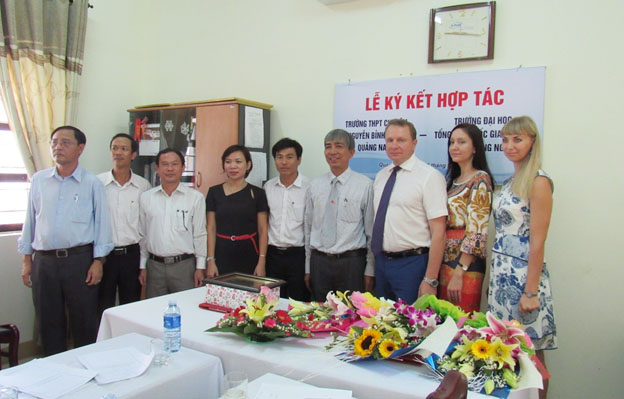

Lễ ký kết hợp tác giữa Trường THPT Chuyên Nguyễn Bỉnh Khiêm và Trường ĐHTH Kurgan

Lần cập nhật cuối lúc Thứ sáu, 23 Tháng 9 2016 16:38 Viết bởi Administrator Thứ năm, 08 Tháng 9 2016 00:00
Ngày 8/9/2016 vừa qua, Trường THPT Chuyên Nguyễn Bỉnh Khiêm - Quảng Nam trang trọng đón đoàn đại biểu Trường Đại học Tổng hợp Quốc gia Kurgan - Liên bang Nga đã tới thăm và làm việc với nhà trường.
Về phía Đoàn lãnh đạo trường Đại học Tổng hợp Quốc gia Kurgan có ông Prokofyev Konstantin Georgievich – Quyền Hiệu trưởng; bà Saveleva Mariia - Phó Hiệu trưởng nhà trường phụ trách lĩnh vực Quan hệ quốc tế cùng một số thành viên tham gia. Về phía trường THPT Chuyên Nguyễn Bỉnh Khiêm có Thầy Lê Nguyên Bảng - Bí thư Đảng bộ, Hiệu trưởng; Thầy Phan Văn Chương – Phó Hiệu trưởng; Cô Phạm Thị Huyền - Phó Hiệu trưởng; Thầy Lê Viết Hà – Phó Chủ tịch Công Đoàn; Thầy Châu Văn Thọ - Bí thư Đoàn trường; Thầy Phạm Hữu Hùng – Phó Bí thư Đảng bộ, Tổ trưởng tổ Toán nhà trường tham dự buổi làm việc.
(Một số hình ảnh tại buổi làm việc giữa Trường THPT Chuyên Nguyễn Bỉnh Khiêm - Quảng Nam và Trường Đại học Tổng hợp Kurgan - Liên Bang Nga)
Phát biểu tại buổi làm việc, Thầy Lê Nguyên Bảng - Bí thư Đảng bộ, Hiệu trưởng nhà trường đã hoan nghênh chuyến viếng thăm và làm việc của Đại học Tổng hợp Quốc gia Kurgan tại Trường THPT Chuyên Nguyễn Bỉnh Khiêm. Thầy Hiệu trưởng cũng đã nhấn mạnh buổi làm việc hợp tác lần này sẽ mở ra giai đoạn khởi đầu tốt đẹp, mang đến nhiều cơ hội hợp tác cho hai bên trong tương lai. Kết thúc buổi làm việc, lãnh đạo Trường THPT Chuyên Nguyễn Bỉnh Khiêm và Đại học Tổng hợp Quốc gia Kurgan đã cùng ký kết biên bản thỏa thuận hợp tác về đào tạo. Theo đó, hai bên thống nhất hợp tác trên các lĩnh vực chủ yếu gồm:
- Phát triển các chương trình liên kết đào tạo và các chương trình hợp tác giáo dục và nghiên cứu khoa học;
- Trường Đại học tổng hợp Quốc gia Kurgan hỗ trợ tài liệu, chuyên gia về các lĩnh vực KHTN: Toán, Vật lý, Hoá học, Sinh học, Tin học cho CBGVNV và học sinh Trường THPT Chuyên Nguyễn Bỉnh Khiêm, phục vụ công tác đào tạo và nghiên cứu khoa học giữa hai Bên;
- Tiến hành trao đổi học viên giữa hai Bên; Trường THPT Chuyên Nguyễn Bỉnh Khiêm sẽ cung cấp học sinh du học tại Trường Đại học tổng hợp Quốc gia Kurgan;
- Tổ chức tham quan, giao lưu học tập cho CBGVNV và học sinh của hai trường.
Thầy Lê Nguyên Bảng, Bí thư Đảng bộ, Hiệu trường nhà trường và ông Prokofyev Konstantin-Q.Hiệu trưởng Trường Đại học Tổng hợp Quốc gia Kurgan – Liên bang Nga ký kết biên bản hợp tác về đào tạo giữa hai trường
(Thầy Hiệu trưởng Lê Nguyên Bảng tặng hoa và quà cho đại đện đoàn trường Đại học tổng hợp Kurgan)
(Ông Prokofyev Konstantin-Q.Hiệu trưởng Trường Đại học Tổng hợp Quốc gia Kurgan – Liên bang Nga tặng quà lưu niệm cho nhà trường.)

Ngay sau buổi Lễ ký kết biên bản hợp tác về đào tạo đã diễn ra Chương trình giao lưu giữa học sinh khối 11, 12 với đoàn đại biểu và đại diện sinh viên trường ĐHTH Quốc gia Kurgan tại Hội trường. Chương trình thu hút sự tham gia của hơn 500 học sinh đến từ khối 11, 12 của Trường THPT Chuyên Nguyễn Bỉnh Khiêm. Ngoài ra, còn có sự tham dự của bà Nataliashafinska Ya, Quyền Giám đốc Trung tâm Khoa học và Văn hóa Nga tại Hà Nội.
Tại buổi giao lưu, các giáo viên và học sinh nhà trường được nghe giới thiệu chương trình giáo dục của Liên bang Nga nói chung và của Trường Đại học Tổng hợp Kurgan nói riêng. Đặc biệt chương trình biểu diễn nghệ thuật vô cùng đặc sắc, hấp dẫn mang đậm phong cách và sắc thái văn hóa Nga do các sinh viên ĐHTH Quốc gia Kurgan biểu diễn đã có sức thu hút mạnh mẽ. Chương trình giao lưu đã đem đến cho khán giả những cảm xúc mới mẻ và dấu ấn sâu đậm về con người và đất nước của xứ sở Bạch Dương xa xôi mà gần gũi, đồng thời góp phần thắt chặt hơn nữa mối quan hệ hữu nghị truyền thống Việt-Nga. Có thể nói, buổi làm việc và ký kết biên bản thỏa thuận hợp tác và giao lưu văn hóa Việt-Nga giữa Trường THPT Chuyên Nguyễn Bỉnh Khiêm và trường Đại học Tổng hợp Quốc gia Kurgan – Liên bang Nga đã kết thúc tốt đẹp, hứa hẹn cơ hội hợp tác giữa hai trường trong tương lai.
NBK
- 16/12/2016 08:45 - Thư ngỏ gửi các em cựu học sinh trường THPT Chuyên…
- 21/11/2016 08:43 - Về việc tham gia cuộc thi Giao thông học đường năm…
- 11/11/2016 08:06 - Thiết kế xây dựng tượng cụ Nguyễn Bỉnh Khiêm
- 06/10/2016 07:35 - Đề thi minh họa kỳ thi THPT quốc gia năm 2017
- 29/09/2016 00:00 - Hội nghị Sơ kết thực hiện đề án phát triển hệ thốn…
- 04/06/2016 07:51 - Danh sách thí sinh thi tuyển sinh 10 THPT Chuyên n…
- 29/05/2016 09:41 - Danh sách thí sinh tuyển sinh 10 THPT Chuyên năm h…
- 12/05/2016 08:29 - Thư ngỏ tuyển sinh 10 THPT Chuyên Nguyễn Bỉnh Khiê…
- 21/04/2016 09:34 - Ưu tiên tuyển thẳng học sinh giỏi các trường chuyê…
- 05/04/2016 10:22 - Văn bản hợp nhất TT 02-2015 và 02-2016 Thông tin v…